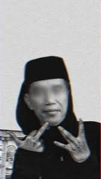

Document

Start spreading the news, I'm leaving today
I want to be a part of it - New York, New York
These vagabond shoes, are longing to stray
Right through the very heart of it - New York, New York
I want to wake up in a city, that doesn't sleep
And find I'm king of the hill - top of the heap
These little town blues, are melting away
I'm gonna make a brand new start of it - in old New York
If I can make it there, I'll make it anywhere
It's up to you - New York, New York
Say, go through the darkest of days
Heaven's a heartbreak away
Never let you go, never let me down
Oh, it's been a hell of a ride
Driving the edge of a knife
Never let you go, never let me down
Don't you give up, nah, nah, nah
I won't give up, nah, nah, nah
Let me love you
Let me love you
Don't you give up, nah, nah, nah
I won't give up, nah, nah, nah
Let me love you
Let me love you
(Oh, baby, baby)
Don't fall asleep
At the wheel, we've got a million miles ahead of us
Miles ahead of us
All that we need
Is a rude awakening to know we're good enough (yeah)
Know we're good enough
